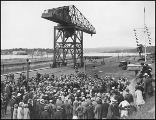
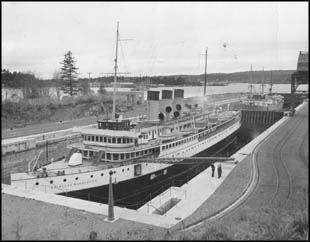

Passer au contenu principal
Passer au menu secondaire
Fil d'Ariane
Notices

Cérémonies de la Confédération

Paquebots en cale sèche
Choisir une année :
Historique 1921 – 1923
Historique 1925
Historique 1926
Historique 1927
Date de modification :